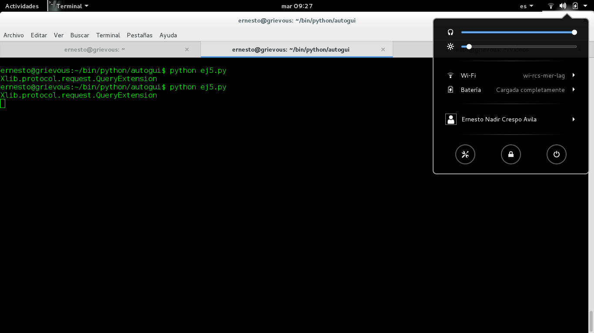

Utilizar drag del ratón con Python usando PyAutoGUI
Posted on mar 12 enero 2016 in Tutorial de Python • 2 min read
En el artículo anterior se muestra la librería PyAutoGUI, haciendo una captura de pantalla, capturando la posición del ratón y realizar movimientos con el mismo.
En este artículo se muestra la ejecución del click del ratón y de drag.
Este primer ejemplo la idea es darle click al menú superior en Gnome donde se muestra el volumen, el brillo y acceso a la configuraciones.
El código se muestra a continuación.
#!/usr/bin/env python
#Importar el modulo
import pyautogui
#Se hace click en la posicion del menu del sistema del escritorio gnome.
pyautogui.click(2712,13)
#Se realiza la captura de pantalla
im1 = pyautogui.screenshot()
#Se salva en un archivo
im1.save('prueba2.png')
La siguiente figura muestra la ejecución del script:

El siguiente script realizará un dibujo sobre Gimp usando drag y al final hace una captura de pantalla del dibujo:
#!/usr/bin/env python3
import pyautogui, time
time.sleep(5)
pyautogui.click()
# click to put drawing program in focus
distancia = 200
while distancia > 0:
pyautogui.dragRel(distancia, 0, duration=0.2)
# se mueve a la derecha
distancia = distancia - 10
#se mueve hacia abajo
pyautogui.dragRel(0, distancia, duration=0.2)
# se mueve hacia la izquierda
pyautogui.dragRel(-distancia, 0, duration=0.2)
distance = distancia - 10
#Se mueve hacia arriba
pyautogui.dragRel(0, -distancia, duration=0.2)
#Al terminar el dibujo se espera 5 seg para la captura de pantalla.
time.sleep(5)
#Se realiza la captura de pantalla
im1 = pyautogui.screenshot()
#Se salva en un archivo
im1.save('prueba3.png')
La siguiente imagen muestra el resultado del script:
Y el vídeo de la acción del script:
¡Haz tu donativo! Si te gustó el artículo puedes realizar un donativo con Bitcoin (BTC) usando la billetera digital de tu preferencia a la siguiente dirección: 17MtNybhdkA9GV3UNS6BTwPcuhjXoPrSzV
O Escaneando el código QR desde la billetera: